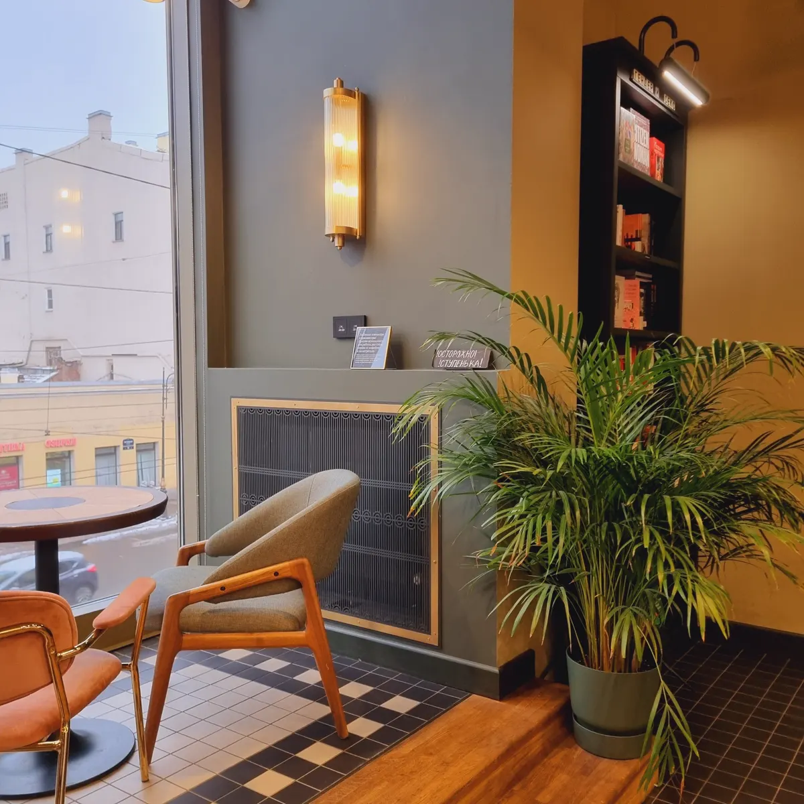
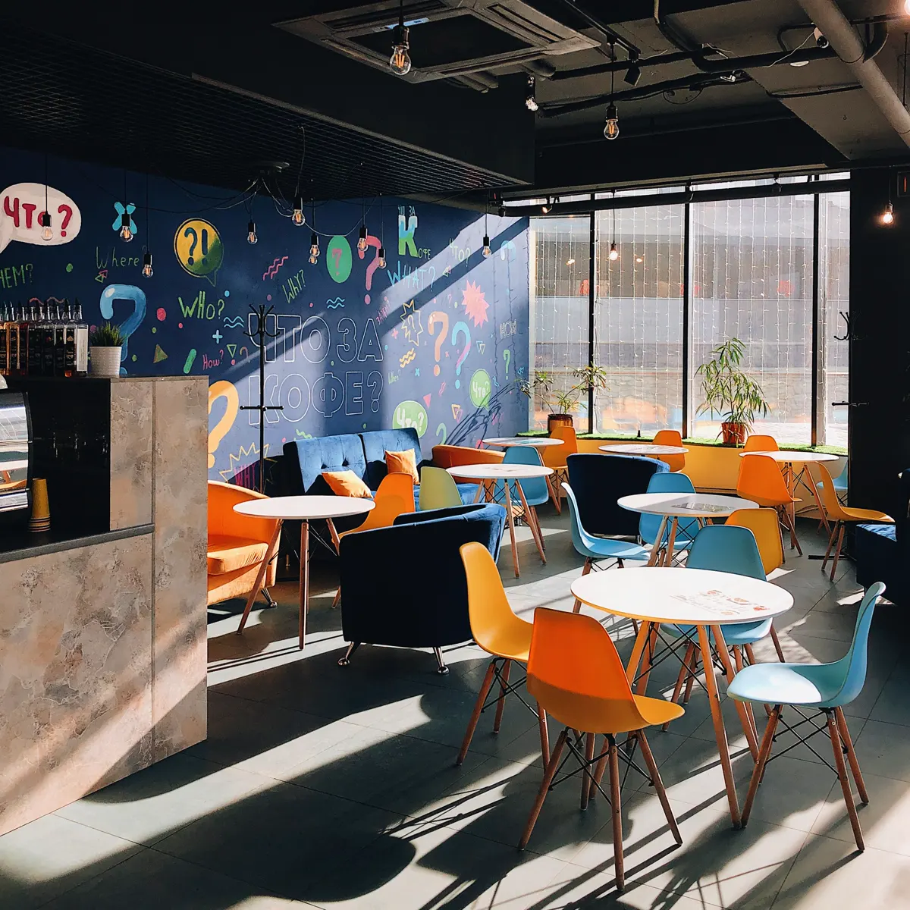
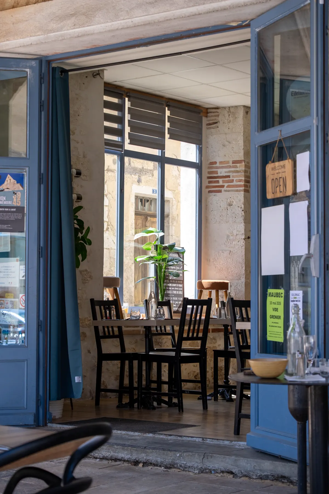
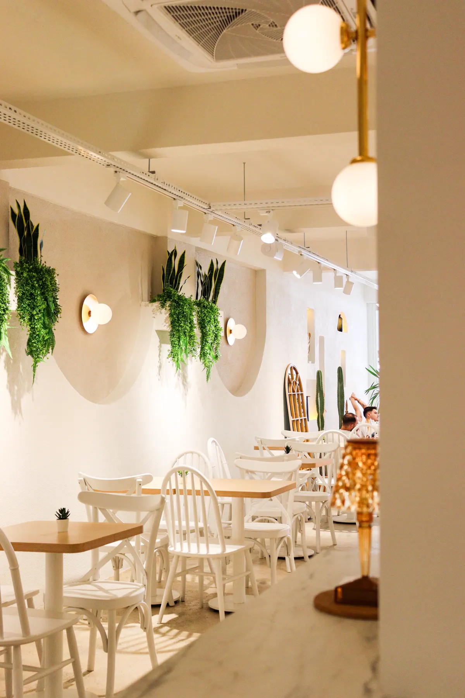
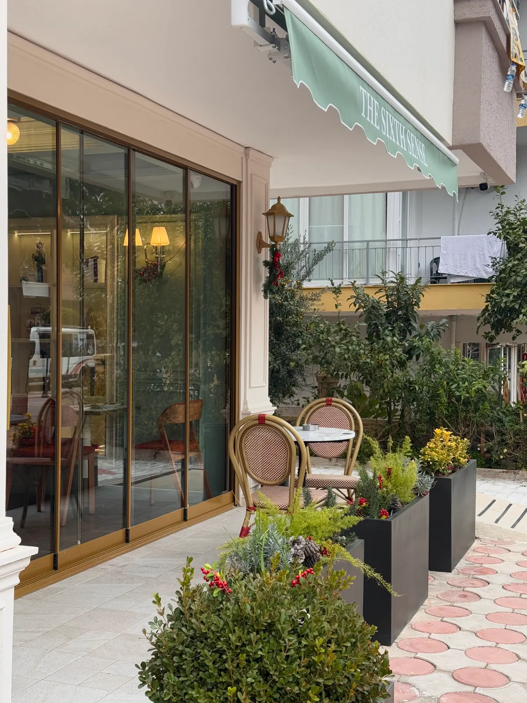
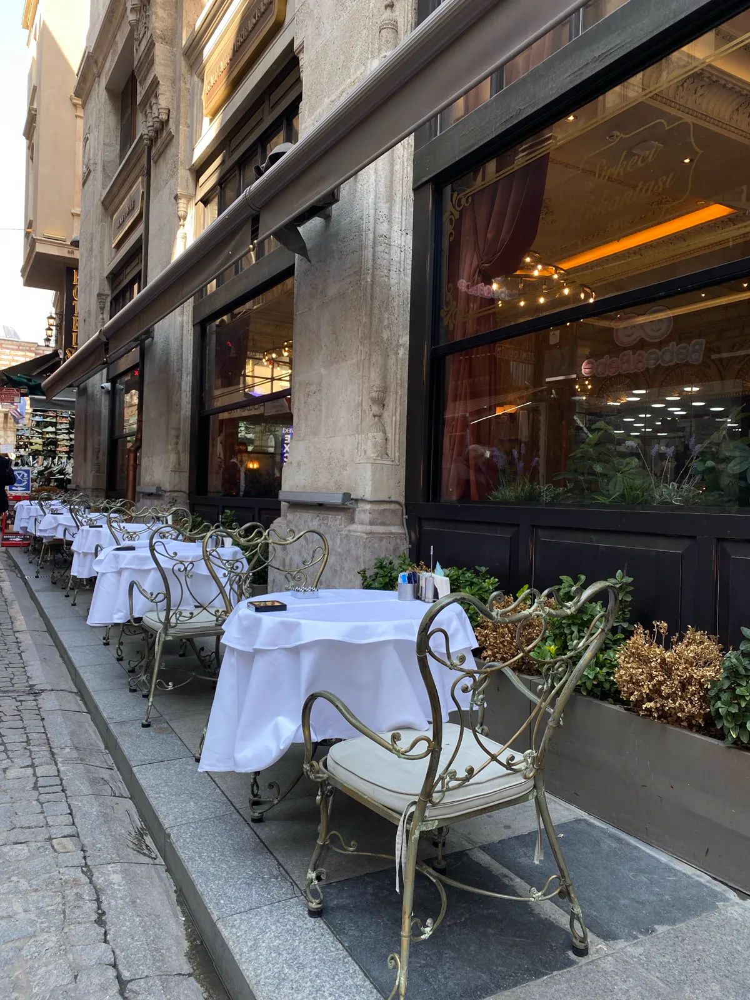

جولة في الكافي بين الزوايا الدافئة والهواء الطلق
استكشف أركان مراسي كافيه خطوة بخطوة؛ من ركن القراءة والنباتات الخضراء، إلى الصالات المشرقة والجلسات الخارجية المريحة.

إضاءة دافئة وخضرة تبعث على السكينة
كرسي مريح بذراعين خشبيين بجوار النافذة مع إضاءة جدارية دافئة، ومكتبة صغيرة تضم كتباً متنوعة ونبتة داخلية خضراء تمنح الزاوية هدوءاً مثالياً للقراءة أو التأمل.

مساحة واسعة مفعمة بالطاقة والبهجة
طاولات مستديرة وكراسي بألوان مبهجة بين الأزرق والبرتقالي والأصفر مع جدارية فنية عصرية وإضاءة نهارية طبيعية تجعل المكان مناسباً للقاءات الأصدقاء والعمل المرن.

ترحيب مفتوح وضوء طبيعي ينساب للداخل
أبواب زجاجية واسعة ترحب بالضيوف مع طاولة خشبية وكراسي سوداء أنيقة تطل على نافذة كبيرة مزينة بالنباتات، لتجمع بين دفء الحوائط الحجرية ونسمات الخارج.

صفاء الألوان البيضاء مع لمسات الخشب والنباتات
تناغم راقٍ بين الطاولات الخشبية والكراسي البيضاء والمصابيح الكروية الدافئة والنباتات المتدلية على الجدران، مما يمنح الجلسة إحساساً بالاتساع والراحة البصرية.

جلسة خارجية هادئة محاطة بالخضرة
طاولة مستديرة وكراسي مضفرة تحت مظلة خضراء أنيقة بجوار الواجهة الزجاجية، تحيط بها أحواض النباتات والزهور لتستمتع بالهواء الطلق في أجواء مريحة.

طاولات خارجية أنيقة على امتداد الواجهة
كراسي حديدية مزخرفة وطاولات بمفارش بيضاء مرتبة على امتداد الواجهة الخارجية، تمنحك تجربة جلوس كلاسيكية راقية للاستمتاع بالمشروب ومراقبة حيوية المكان.